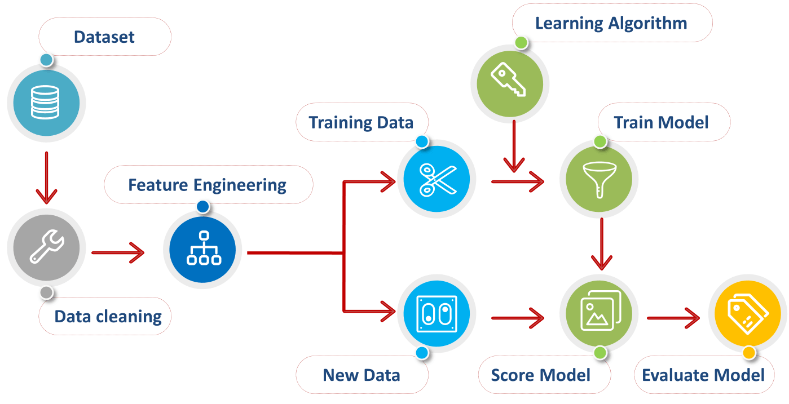

Machine Learning (ML) is a branch of artificial intelligence based on the idea that systems can learn from data, identify patterns and make decisions. ML system is trained rather than explicitly programmed, basically it is presented with many examples relevant to a task, and it finds statistical structure that eventually allow the system to come up with rules for automating the task. To implement various ML models, we will make use of Scikit learn(sk-learn) library, which is a simple open source Machine Learning library, which provides efficient tools for data analysis, data pre-processing, model selection, model fitting, evaluation etc. It is built on Numpy, Scipy and Matplotlib libraries.
